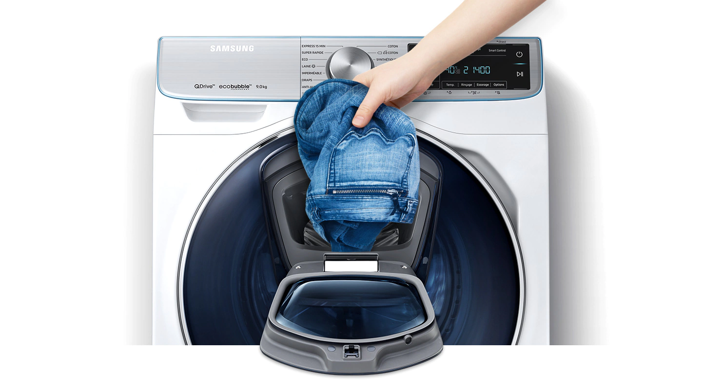
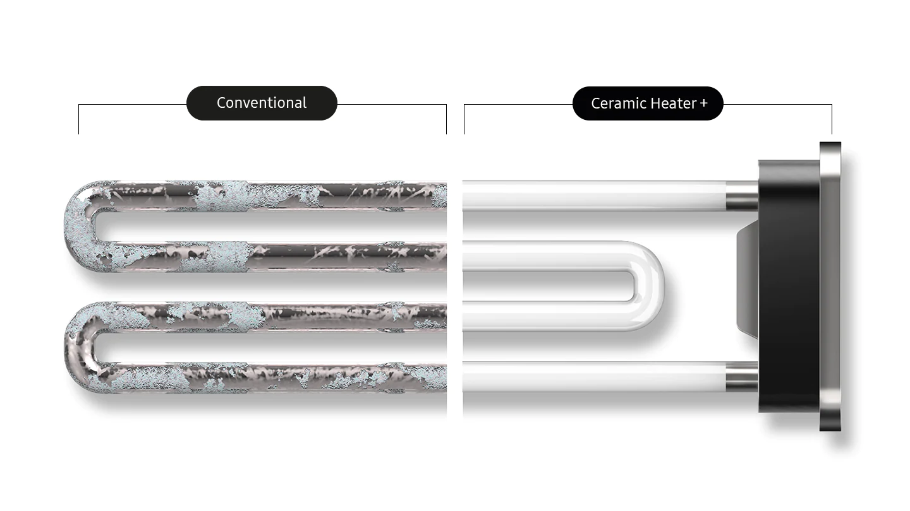
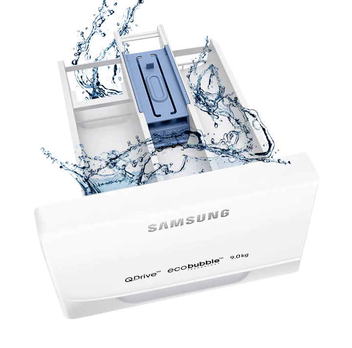
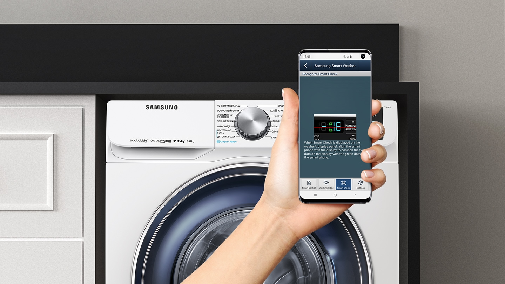

Ți-ai uitat cămașa? Ușa AddWash ™ vă permite să puneți haine uitate *, balsam de pânză sau detergent suplimentar în tambur chiar și după ce ați început să vă spălați **. În plus, puteți adăuga cu ușurință haine spălate manual, care trebuie clătite sau uscate cu ușurință.

Îndepărtarea eficientă a murdăriei
Tehnologia EcoBubble face ca hainele tale să pară noi. Înainte de a începe spălarea, un generator special creează bule de aer prin dizolvarea detergentului în apă și transformarea acestuia în spumă. Spuma albă ca zăpada perfectă pătrunde rapid în țesătură, oferind nu numai o îndepărtare eficientă, ci și delicată a murdăriei. Tehnologia EcoBubble reduce, de asemenea, semnificativ impactul mecanic al detergentului asupra țesăturilor, permițându-vă să păstrați articolele preferate cu aspect original.
Spălare rapidă și completă
Modul rapid vă va economisi timp și va obține un rezultat de spălare excelent în doar 49 de minute. Datorită sistemului dual de alimentare cu apă în partea de sus și de jos, modul rapid în combinație cu generatorul EcoBubble elimină în mod eficient orice murdărie. În același timp, timpul de clătire este, de asemenea, redus datorită aportului suplimentar de apă direct la tambur, o creștere a eficienței de centrifugare se datorează modelului special de vortex al tamburului Swirl + și creșterii vitezei de rotație a Tobă.
Curățenie igienică
Păstrați mașina igienică. Eco Drum Clean îndepărtează murdăria și mirosurile cauzate de bacteriile care se acumulează pe pereții tamburului. Nu este nevoie să folosiți detergenți scumpi pentru a curăța tamburul, deoarece mașina este curățată cu o combinație de tambur umed, pulsant și rotitor la viteză mare. Mașina de spălat afișează automat un avertisment pentru a vă avertiza că tamburul trebuie curățat.
Mai liniștită și mai economică
Motorul cu digital inverter
Veți aprecia un consum mai mic de energie, un zgomot de funcționare mai mic și o durată lungă de viață. Motorul invertorului digital folosește magneți puternici și elimină periile tradiționale pentru o funcționare silențioasă, eficiență îmbunătățită de spălare și consum redus de energie în comparație cu un motor universal. Acest motor electric este extrem de durabil și, prin urmare, are o garanție de 10 ani.
Durabilitate
Incalzitor din ceramica
Cu Ceramic Heater +, mașina poate funcționa mult mai mult. Designul său patentat utilizează un material unic de eliberare și o microstructură. Acest lucru reduce posibilitatea formării scării , ceea ce reduce conductivitatea termică. Acest lucru mărește durata de viață a elementului de încălzire.

Curățarea de reziduurile de detergenți
Tehnologia StayClean Drawer curăță detergenții cu un sistem special de clătire a apei. În acest fel, mai puțin reziduuri de detergent rămân în tambur, iar tava pentru detergent este mai curată și mai igienică.

Curățenie igienică
Spălare cu aburi
Curățare profundă cu abur. Spălarea cu abur îmbunătățește calitatea curățării hainelor fără pretratare. Aburul este introdus în tambur de jos, astfel încât hainele să fie complet saturate. Aburul elimină particulele de murdărie și 99,9% din bacterii și dezactivează alergenii.
Timpul de spălare este redus la jumătate
Q-Drum™
Tehnologia QuickDrive ™ reduce timpul de spălare cu până la 50% și consumul de energie cu până la 20% fără a compromite performanțele de spălare. Prin utilizarea funcției Q-Drum ™ cu un tambur principal rotativ independent și placa de fund, haina se mișcă dinamic cu o răzbunare. Datorită acestui fapt, spălarea devine mai rapidă, mai puternică și mai moale.
Diagnosticare inteligentă
Funcția Smart Check
Uitați de cheltuielile și inconvenientele suplimentare de rupere a mașinii. Smart Check este un sistem automat de monitorizare a mașinii care poate fi utilizat pe un smartphone folosind o aplicație dedicată. Funcția detectează defecțiunile într-un stadiu incipient și oferă diagnosticare rapidă, oferind o soluție pentru eliminarea acestora. Acest lucru economisește timp și costuri pentru reparații.

Protecție la supratensiune
Funcția de control al voltajului
Volt Control protejează aparatul de supratensiuni. Acesta detectează o creștere semnificativă a tensiunii de alimentare și oprește automat mașina. Acest lucru previne deteriorarea mașinii de spălat.